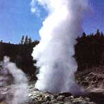
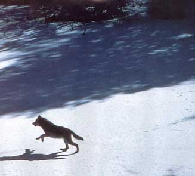
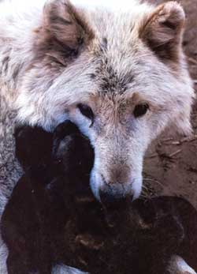
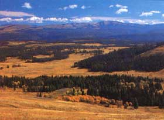
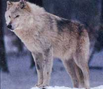
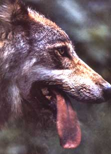
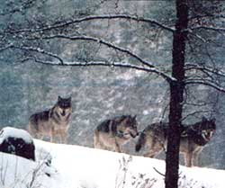

Reintroducing wolves to Yellowstone is as controversial as
the park's policy of letting forest fires burn
The Chico Hot Springs Hotel is the social hub of Pray, Montana, which lies just outside Yellowstone National Park. When I checked and mentioned to the desk clerk that I had come to look in on the controversial proposal to return the gray wolf to the park, he remarked that a big gray had been run down recently on an adjacent road. The concensus among the loungers in the lobby seemed to be that the casualty wandered off from the E.H. McCleery Foundation, a spacious private refuge for some 80 wolves just over in Emigrant.
Like most Americans. I'd never had an unbarred glimpse of a wolf. So I called Jack Lynch, the foundation's director, to see if I could at least have a long-distance view of his wild charges.
Within the first minutes on the phone with Mrs. Lynch, who answered, I learned that if there's one thing she and her husband hate, it's the Yellowstone wolf recovery project, the plan to reintroduce wolves to the parl. They know that some animals will stray from the safety of the park and be slaughtered by a citizentry conditioned to regard them as evil incarnate.
Next, the Lynches hate journalists. "You people know nothing about wolves!" Mrs. Lynch said. "You think they should be preserved just so you can hear a wolf song!" I had to admit I would like to, but asked if I could come by and see her pack anyway. "We're working on our perimeter fences-you don't even know what that means-and we don't have time to waste," she said, her voice rising. "My hands are dripping with blood! I have hungry wolves to feed!" Then she hung up.
I retreated to the game-oriented ambience of the Chico bar. There I learned that, unlike Mrs. Lynch, most of those opposed to the Yellowstone recovery project are not concerned about the wolves' welfare. As far as the stockgrowers and biggame outfitters are concerned, returning the top predator of the hoofed to a region famed for sheep and cattle ranching and deer, elk and moose hunting is nothing short of inviting economic disaster. A rancher who runs cattle near Red Lodge, over by the park's northeast corner, said he was too busy dealing with bears to worry about wolves yet, "but if I had sheep-wolves are hell on sheep-I'd go crazy over this Yellowstone thing." Through the darkening saloon window, I made out a bumper sticker: DID A WOLF GET YOUR DEER?
That the wolf evokes strong feelings out West, one way or the other, is understandable, considering its carnivorous history there. For all but the most recent fraction of the past 15 million years, packs of wolves roamed the Yellowstone region where a few now live behind fences. By the 1930s, cowboys, hunters and rangers had almost entirely eradicated their major competitor for red meat from this and 99% of its other U.S. territory. The odd wolf is still occasionally spotted in northern Michigan, Wisconsin, Idaho and Montana, but the only sizable populations aside from Alaska's are either "threatened," like the 1,200 wolves in northern Minnesota, or "endangered," like the dozen on Lake Superior's Isle Royale.
With the dawn of ecological consciousness in the 1960s, however, things started to look up for the wolf. Books, articles, films and crusading pop stars have fueled an effective PR campaign that has changed the wolfs big bad image. Where wolves still linger, plans have been drawn to wolf-proof local grazing economies to forestall predation, as here in Montana. Despite opposition from lobbying groups in states near the park, surveys now show that most Americans support the Yellowstone wolf recovery project. Sometime this year, it's likely that Congress will take the first steps to restore this major missing piece of the world's largest intact Temperate Zone ecosystem.
THE NEXT MORNING, I drove over to Yellowstone to see ranger Norm Bishop, the park's research interpreter. At headquarters in Mammoth Hot Springs, he handed me his bark-imprinted business card with a wolf on one side and this quote on the other: Of all the native biological constituents of a northern wilderness scene, I should say that the wolves present the greatest test of human wisdom and good intentions. Paul Errington, Of Predation and Life. Right away, I got that rare feeling of being glad fm a taxpayer. Bishop offered to give me the prorecovery viewpoint and an idea of where and how the wolves will live if and when they return. We took off for prime wolf country, the park's northeast quadrant.
After an hour's drive through the severe, desertic beauty of Yellowstone in fall, we stopped to watch a herd of bison graze in the remote Lamar River valley. Slough Creek, a blue-ribbon trout stream, sparkled in the sunlight. The plentiful prey, water and sandy soil amen able to digging dens (wolves can live both in caves and underground make this place a paradise from a wolfs point of view. "If I were playing God, I'd put the wolves here," said Bishop, benignly eyeing the buffalo. "Their ecological role is to be the top predator of large hoofed animals, and in that work, no other animal comes close."
Even those known out West as "banjo-eyed environmentalists" no longer attempt to put the wolf in sheep's clothing. In 1986, University of Minnesota biologist David Mech and photographer Jim Brandenburg actually lived with a wild pack on Ellesmere Island, 500 miles south of the North Pole. Their studies proved that the wolf may not be the horror film werewolf-type monster who kills effortlessly and at whim, but it isn't the mouse-eating pussycat made famous in Never Cry Wolf, either.
Mech and Brandenburg found that in real life, to get the five to 12 pounds of meat per day it requires, the wolf leads a harsh existence of grueling day-and-night hunts year-round. Neither as fast nor as strong as the big ungulates it stalks, the wolf suffers many injuries while hunting and makes numerous unsuccessful attempts for each kill. Only by cleverly working the herd can a wolf bring down, say, a 400-pound elk. It seems that the species' predatory prowess, like man's, depends far more on brains than brawn. And on cooperation.
That prowess is badly needed at Yellowstone. The absence of what biologists euphemistically refer to as the wolfs "evolutionary pressure" has caused a serious ecological imbalance in the park. With only a few coyotes and the occasional grizzly to worry about, inflated ungulate herds are overgrazing and destroying the range.
Studies in the wild suggest that wolf predation won't jeopardize and may actually benefit the herds as well as the grasses. For example, on Isle Royale, wolves are responsible for only 6% of ungulate deaths, mostly the unfit, calves and the elderly. When wolves were removed from nine areas in the USSR, the same number of moose still died, but from disease instead of predation. "At first we'd expect a big spurt in the wolf population," said Bishop. "Then the increase in predation will make prey less accessible, and the wolf numbers will fall. In the wild, many starve to death."
Aside from the ungulates and some coyotes, other Yellowstone species will probably not be affected by the wolves, at least not adversely. Grizzlies, too slow to get elk on their own, will find extra protein from scavenging wolf kills, according to Bishop. From time to time, even unlikely species could benefit from predation. "In 1980 and 1981 we lost many bighorn to pinkeye; the sheep couldn't see where they were going and fell to their deaths," he said. "Normally, bighorn escape wolves by retreating to inaccessible places. During the pinkeye situation, wolves might have nipped the epidemic in the bud when the first few sheep began stumbling."
Bishop's positive attitude about wolf predation is in keeping with Yellowstone's mandate to maintain its ecosystem in as natural a state as possible. But these days, biologists maintain that "natural" doesn't mean that hunter and hunted automatically preserve stable population levels if left to their own devices. On Isle Royale, for example, the wolf numbers have vacillated from 20 to 50, back down to 14, and up to 20 again.
"Weather, social stresses and territory-each pack needs a minimum of 50 square miles-as well as the availability of food combine to control wolf numbers in complicated ways," said Bishop. "A bad winter, which makes it hard for elk to forage and to escape predators, means wolves get more elk. Initially, the wolves increase, and the elk decrease. But in time, that will rebound to the wolves' disadvantage."
Our next stop was an outcropping above the park's vast winter elk range. With the aid of binoculars, brown pinpoints on the golden expanse turned into elk, some three miles away. "They're grazing in an area badly burned in the summer of 1988," said Bishop. "About a third of the range was affected, but the grasses in those parts now have three times more protein than old growth."
Vantage points like this one, high over open game territory, will be the visitor's best bet for getting a glimpse of a Yellowstone wolf. The species has evolved to take extreme measures to avoid attracting the attention of man. In parts of Europe, especially Italy, people unknowingly live near wolves all the time; if a wolf is caught by dawn light while scavenging in a dump, it just hides under a bush until it's safe to emerge. In fact, the record of confrontations, especially violent ones, between man and wolf has been remarkably one-sided. Many dogs attack people each year (in a recent year there were 11 fatalities), but there's never been a single report of an attack by a nonrabid wolf in the U.S.
"Howling will be just about the only way most people will know wolves are here," said Bishop. "Their songs will add a lot to the experience of sitting around the campfire. In Canada, some parks even offer programs where visitors get to go out and sing along with the pack-it's easy to learn."
Howls, which warn away strange wolves and help pack members locate one another, also express the complex relationships of dependence and dominance in each group. The social bonds, skills and discipline vital to the pack's communal hunting and pup rearing are forged early by its strict chain of command. An average pack has six to eight members-usually the alpha, or dominant, couple, their pups, those pups' adult siblings and, occasionally, unrelated others. This tight roster suggests a hard fact of hierarchical lupine life: Generally only the male and female leaders breed. With some exceptions, others who attempt to mate leave or are driven off to face huge odds against survival on their own.
Considering the stern controls on breeding and the consequences of violating them, it's perhaps for the best that mating season is only three months long-"the mean date is Valentine's Day," said Bishop. As is often the case among mammals, the female is in charge. Her blood in the snow interests the male. Once she has his attention, she initiates courtship by rubbing and licking his face and body. Their copulation is prolonged, probably to reinforce the alpha bond, and therefore the pack's bond.
At Hellroaring Creek, we stopped to examine the crags and caves in the nearby rocky slopes that help make this area another likely wolf habitat. "Even in ideal circumstances like one of those caves, of the five or six pups born in the spring, just two or three will make it to winter," said Bishop. "Perhaps only one to the following spring."
Because the survival of the young is essential to that of the pack, they're top priority to every member. In addition to feeding weaned youngsters with regurgitated meat from kills, nonparental adults also play with the pups and put up with their nonsense. In fact, a pack seems to spend a lot of time just fooling around. "Sociability and team effort are so important that a wolf who's aggressive and nasty will be shoved out, a 'lone wolf,"' said Bishop. "If he's ornery, an old wolf may be driven off instead of having allowances made for him, like being waited for on the trail."
Before such details of lupine social life can be observed again at Yellowstone, the park's new wolves must be made to feel at home. In one likely scenario, said Bishop, seven or eight grays from a Canadian park would spend their first few months in a large, remote enclosure, getting used to the Yellowstone environment before being released. The wolves will wear radio collars to aid location, perhaps ones rigged with a sedative dart so any emergencies could be handled by remote control. Aside from these early interventions, says Bishop, the wolves will be managed with a hands-off approach.
Benign neglect will be a complete reversal of the philosophy that prevailed when wolves were last in the park. At the turn of the century, Yellowstone's herds of bison, deer, elk and moose were badly depleted; only 20 to 50 buffalo roamed, versus the 2,644 there today. The public adopted a rescue mentality toward these "poor, defenseless" ungulates, and suddenly, wolves became bloodthirsty poachers to be hunted down and shot. One measure of the hostility they evoked until recently is that, of Yellowstone's four threatened or endangered species-the peregrine falcon, whooping crane, grizzly and wolf-only the last isn't being actively restored.
Bishop has thought a lot about why the white man has hated the wolf for most of history. He points out that Native Americans admire and emulate the predator, but Western civilizations identify it with the fearful, pagan and diabolic-like werewolves. One aspect of this dark link, he thinks, could be wolves' battlefield scavenging during European wars.
"For whatever reasons, we tend to project our dark side onto them-hunters 'harvest,' but wolves 'slaughter,' " said Bishop. "We say they're 'cruel' because of the difficulty they have in swiftly killing big animals. Wolves have to wound their prey, then wait to make an easier kill, or they'd be killed themselves. Their predation is no more cruel than a bird eating a bug! We call them cowardly because they run from man and act fearful when captured. Intelligent would be a better word: Evolution has taught them that attacking man never pays.
"But the basic problem man has with wolves is control, always a big issue for dogmatic thinkers," said Bishop. "Something about the wolfs combination of being smart and independent-you really can't domesticate them-just infuriates some people."
HAPPILY, the number of people who feel this way is decreasing. "Wolves belong in Yellowstone, and most people want them back here," said Bishop. "The motivation for the recovery project is aesthetic and moral. . . the impulse to have a complete ecosystem again. The debate over wolf recovery really comes down to one question: Are we ready to share the earth with another top predator?"
It seems that most Americans are. Wildlands and the wildlife in them have enjoyed increasing public support since the passage of the first Endangered Species Act in 1969. Congress approved a stronger version of the ESA in 1973, and recently reauthorized it, almost unanimously. It says something about the current debate over returning wolves to Yellowstone that its neighbors Utah and Idaho were the only holdouts. To many residents in Western states, a wolf isn't just a photogenic abstraction on a Sierra Club poster: It's a flesh-and-blood competitor for the livestock and game that are their livelihood.
"We're not antiwildlife, we're the people who've preserved the open spaces that provide their food and habitat," said Bob Budd, director of the Wyoming Stockgrowers' Association in Cheyenne. "But we don't want wolves at Yellowstone for the simple reason that there's no way to control them when they inevitably move outside the park. There are no legal mechanisms in place that specify what will happen when we have some stock killed by wolves or even a whole herd wiped out, which has occurred."
"Economic damage suffered by farmers and ranchers is the real issue in wolf recovery," agreed Hank Fisher, Northern Rockies representative of the Washington-based pro-wolf lobbying organization, Defenders of Wildlife. "And fortunately, we have good solutions to that problem now."
The measures Fisher is talking about have been developed over years of trial and error by the stockgrowers and wildlife managers of an area in northern Minnesota that's never stopped being wolf country. Of 12,000 farms with livestock there,, records show that predation has occurred on just 40 and accounts for only 0.5% of total losses per year. Stockgrowers are reimbursed by the state for animals killed by wolves, and game officers kill problem wolves to help control predation. The Yellowstone recovery area has less livestock and would have many fewer wolves, so the damage should be less, too. "In Yellowstone, just as in Minnesota, problem animals will be killed and ranchers will be compensated for any losses, in this case, by the Defenders of Wildlife," said Fisher. "We're willing to put our money where our mouth is."
To keep the Yellowstone region's sportsmen and outfitters tolerant of recovery as well, wolves could become fair game once their population becomes well established. An area with 50 to 150 unmanaged wolves might lose 300 to 1,200 elk annually, a significant game decline. Allowing the wolf to be hunted at certain times and places would protect hoofed game and may even incline residents to value it as a trophy animal rather than disparage it as a varmint.
Because the issue of wolf recovery is so sensitive out West, two separate legislative approaches to effect it are currently being considered in Congress. In the House, Congressman Wayne Owens (D-Utah) has introduced a proposal to approve .the first step of wolf restoration: an Environmental Impact Statement (EIS), a study of the impact wolves would have on the Yellowstone area. Usually an EIS is initiated at the bureaucratic level. Because wolf recovery is so politically sensitive, Owens and his 62 cosponsors are going right to Congress for an OK. If they get it, the necessary research will be completed and published. Then, after various agencies and the public review the EIS, the recovery project's ground rules will be determined. Finally, Congress will grant funding, and the wolves will be on the way, perhaps in three to five years.
In the Senate, James McClure (R-Idaho), a conservative friend of President Bush who's especially friendly to stockgrowers, has introduced an innovative proposal for wolf recovery that doesn't require an EIS. McClure simply wants to remove the wolf from the endangered species list. By placing wolves outside federal controls, this step would free each state to do its own management outside the park. If that were the case, opposition to the Yellowstone project would melt.
"Wolf recovery looks more promising than ever because we now have two legislative paths to begin it," says Fisher. "The livestock people now see that wolves at Yellowstone are inevitable; it has become a matter of how, not if."
Back at Mammoth Hot Springs, Norm Bishop and I pulled up beside a few elk languidly grazing among the park buildings. I couldn't help wondering if they'd be lounging around like dairy cows if there were a few wolves out there somewhere, making the wild animals feel wild again.
Winifred Gallagher is a senior editor at American Health and is working on a book about the environment.
|
 Ranchers and environmentalists alike feel strongly about the return of wolves to Yellowstone. |
 The wolf leads a harsh existence of grueling day-and-night hunts year-round. |
 An average pack has six to eight wolves - usually the alpha (dominant) couple, their pups, those pups' adult siblings and, occasionally, unrelated others. |
|
 The absence of what biologists refer to as the wolf's ""evolutionary pressure"" has caused an imbalance at Yellowstone. |
 Sen. James McClure (R-Idaho) wants to remove wolves from the endangered species list. |
 Stockgrowers and biggame outfitters say that returning the wolf to an area famous for sheep and cattle ranching and deer, elk and moose hunting is inviting economic disaster. |
|
 |
|
|